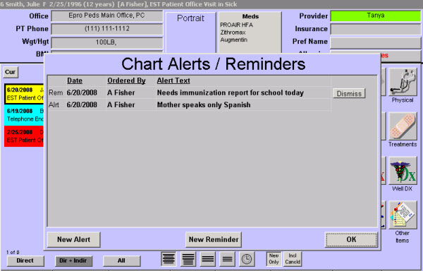

|
Description
Chart alerts can be used for information that you want to be sure the office personnel will notice. Alerts are commonly created for items such as:
- Latex allergy
- Similar or same named patients (for example, multiple John Smith's)
- Alert Providers and staff memebers that a patient or parent has a specific condition (blindness or deafness)
In version 5 there are two types of chart alerts:
- Alerts - which are more permanent and can be removed only by a provider or clinical staffer
- Reminders - which are temporary and can be removed by any user with access to clinical data
 TIP: Chart alerts can be used as permanent alerts or as important, yet temporary, reminders. TIP: Chart alerts can be used as permanent alerts or as important, yet temporary, reminders.
In the paper chart environment, you might write information in bold marker on the outside of the chart to ensure that all office personnel see that information. That would be an example of a permanent alert, such as a latex allergy.
Perhaps there was an item that was important, and needed to be attended to during today's visit. That might be handled with a "sticky note" on the patient's chart. That would be an example of a temporary reminder type of chart alert, such as needing an immunization form.
CAUTION: Remember that patient confidentiality ultimately dictates what should and should not be included within the alert. The alert screen will display whenever any user accesses the patient's chart.
When to Use Alerts vs. Reminders
Your practice will ultimately decide how to implement the alerts and reminders. Some suggestions for deciding when to use alerts vs. reminders are listed below:
Use an alert...
- If the information is clinical in nature, such as a latex allergy
- If the information is of a social nature, such as the patient being related to a fellow doctor or the patient speaking only Spanish
Use a reminder...
- If the information is financial, such as a past due amount or other billing inquiry
- If the information is a form or report request, such as an immunization form
How to Access This Screen
This screen can be accessed by:
- Accessing the Patient Chart screen (if there are chart alerts for the patient, the Chart Alert screen appears automatically when any user displays the Patient Chart screen)
- Selecting the Alert button from the menus on the Treatment room, Waiting Room, Checkout Room, etc.
- Selecting the Alert button on the bottom of the Patient Demographics screen
Screen Example

Want to Learn More?
Related Solutions
Concept: Chart Alerts
Screen: Patient Chart
Screen: Patient Demographics
How to: Add a Chart Alert
How to: Delete a Chart Alert
How to: View a Patient's Chart
|